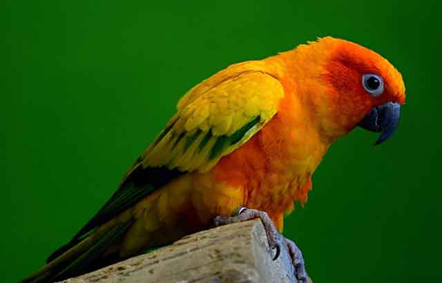
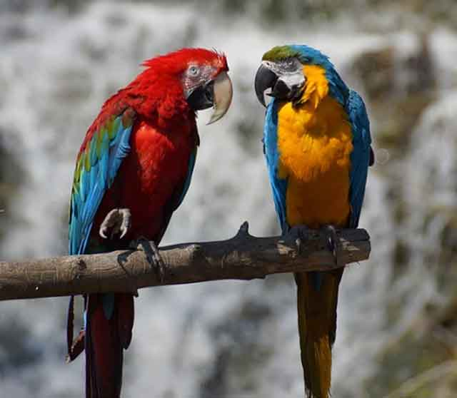
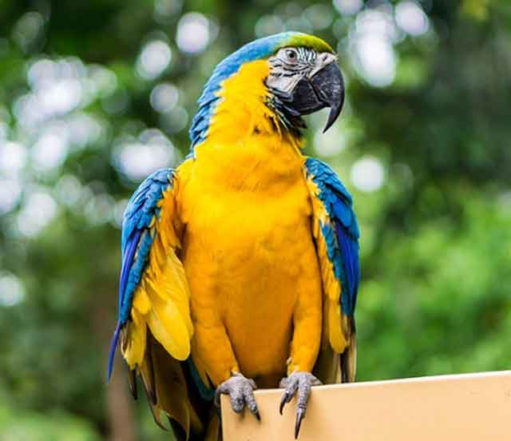

앵무새 행동으로 보는 기분 상태!
앵무새는 사람과 소통이 가능한 동물입니다. 그래서 앵무새 행동을 분석하는 것으로 신뢰를 쌓아갈 수 있고 나름대로 서로가 필요한 것을 요구하고 받아들이는 과정을 만들어갈 수 있죠. 그래서 앵무새 행동을 이해하고 분석하는 것은 중요합니다. 만약 지금 키우고 있는 앵무새의 특징적인 행동이 이해가 가지 않는다면 다음의 내용을 참고해 보는 것은 어떨까요? 앵무새 행동으로 보는 기분 상태! 알아볼게요.
[동공의 수축과 확장]
앵무새는 자신의 홍채를 늘리고 줄이는 행동을 할 수 있습니다. 보통 이런 행동을 보이는 것은 기분이 좋거나 혹은 화가 많이 난 상태에 보입니다. 당연히 화가 난 상태라면 주인을 공격할 수 있지만, 반대로 한 곳을 계속해서 응시할 때는 기분이 좋은 것으로 이해할 수 있습니다.
[으르렁, 쉭쉭 소리내기]
회색 앵무새, 메이어 앵무새와 같은 특정 종의 앵무새는 으르렁 소리를 내는 특징이 있습니다. 소리의 울림으로도 알 수 있듯이 그다지 좋은 소리는 아닙니다. 행복하지 않음을 표현하는 것이죠. 마찬가지로 쉭쉭-. 소리를 냈을 때도 기분 나쁘다는 것을 표현하는 수단이기도 합니다.
[갸르릉 소리내기]
마치 강아지가 경계할 때 내는 소리와 같이 갸르릉 소리를 낼 수 있는 데요. 새들은 기분이 좋거나 스스로 만족할 만한 무엇인가를 느꼈을 때 이런 소리를 냅니다.
[부리로 호기심 표현하기]
앵무새는 호기심이 많은 동물입니다. 그래서 부리로 무엇인가를 탐험하려고 하죠. 이런 행동을 보이는 것은 장난감이나 손가락 등이 보일 때 무엇인가를 탐험하기 위해 건드려 보는 것입니다.
[부리 갈기]
사람이 이를 가는 것처럼 새가 이를 간다고 생각하시면 되는 데요. 앵무새의 부리 위, 아래를 좌우로 왔다 갔다 하면서 소리를 냅니다. 앵무새가 이런 행동을 보이는 것은 지금 행복하고 기분이 좋다는 것을 의미합니다.
[소리내기]
앵무새는 사람의 말을 따라 한다고 잘 알려졌죠? 마치 무엇인가 말을 하듯 중얼중얼, 재잘거리는 모습을 볼 수 있습니다. 이런 행동은 보통 잠들기 전에 보이는 행동입니다. 잠들기 전 주변 친구들과 대화를 하듯 소리를 내며 행복하니 잠이 들겠다는 것을 의미합니다.
클릭킹이라고 해서 왕관앵무새나 코카투 등이 내는 소리로 부리로 탁탁 두 번 소리를 내기도 합니다. 이런 행동 역시 기분이 좋은 것을 의미합니다.
[자세를 낮추고 노려보기]
느낌 적으로 상당히 불안정한 상태로 공격을 의미합니다. 자세를 낮추고 계속해서 노려보고 있다면, 이제 곧 공격할 것이라는 걸 경고하는 행동입니다.
[머리 아래로 기울이기]
몸을 잔뜩 웅크리면서 머리를 아래로 기울인다면 이런 행동은 앵무새가 머리나 목 뒤쪽을 긁어달라는 신호입니다. 앵무새는 머리나 등을 긁어주는 것을 좋아합니다.
이외에도 앵무새의 다양한 행동들이 많은데요. 반려동물을 잘 키우기 위해서는 동물의 특성을 잘 이해하고 환경을 만들어주는 것만큼 행동이나 표현을 분석하고 소통하는 것도 중요합니다. 앵무새 행동을 분석하고 이해해 조금 더 친밀함을 높여보는 것은 어떨까요?
[출처] 앵무새 행동으로 보는 기분 상태! ｜ 작성자 땡자